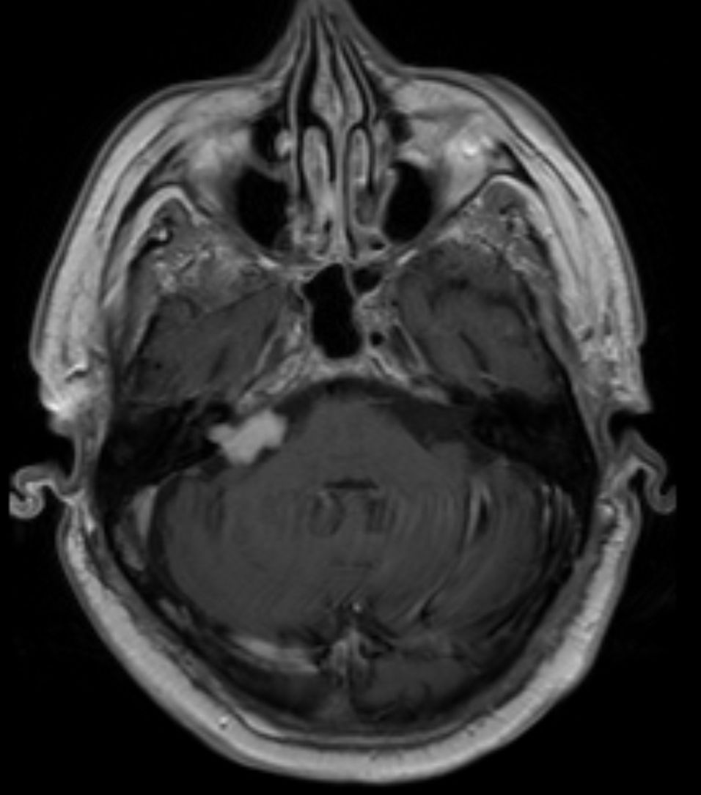

Ficha del catálogo
Schwannoma vestibular
- Sistema
- Nervioso
- Modalidad
- RM
- Región
- Ángulo pontocerebeloso y conducto auditivo interno
- Dificultad
- Intermedio
El schwannoma vestibular es el tumor más frecuente del ángulo pontocerebeloso y se origina en la vaina de Schwann de la porción vestibular del octavo par craneal. Se manifiesta con hipoacusia neurosensorial progresiva unilateral, acúfeno e inestabilidad, y crece con lentitud a lo largo de años.
Técnica
Resonancia magnética de conductos auditivos internos con secuencias muy potenciadas en T2 de alta resolución y cortes finos, junto con T1 con contraste dirigido a la fosa posterior. El estudio con T2 volumétrico permite el cribado sin contraste.
Qué observar
- Masa centrada en el conducto auditivo interno con componente cisternal
- Morfología en cono de helado con el vértice dentro del conducto
- Ángulos agudos respecto a la superficie del peñasco
- Ensanchamiento y remodelación del poro acústico
- Realce intenso, a veces heterogéneo por quistes intratumorales
- Bilateralidad, que obliga a considerar una forma sindrómica
Hallazgos
Lesión extraaxial bien delimitada, isointensa o discretamente hipointensa en T1, de señal intermedia a alta en T2 y con realce intenso tras el contraste, centrada en el conducto auditivo interno y con extensión a la cisterna del ángulo pontocerebeloso. Las secuencias muy potenciadas en T2 muestran el defecto de repleción dentro del líquido cefalorraquídeo del conducto y permiten valorar la relación con los nervios. Los tumores grandes deforman la protuberancia y el pedúnculo cerebeloso medio y pueden causar hidrocefalia.
Perlas
La distinción con el meningioma del ángulo pontocerebeloso se apoya en tres datos, ya que el schwannoma se centra en el conducto, forma ángulos agudos con el peñasco y ensancha el poro, mientras que el meningioma tiene base dural amplia, ángulos obtusos y con frecuencia hiperostosis. La forma bilateral es prácticamente diagnóstica de una neurofibromatosis de tipo dos y cambia por completo el manejo familiar.
Diagnóstico diferencial
- Meningioma del ángulo pontocerebeloso
- Base dural amplia excéntrica al conducto, ángulos obtusos, cola dural e hiperostosis, sin ensanchamiento del poro.
- Quiste epidermoide
- No realza, tiene señal similar a la del líquido cefalorraquídeo, restringe intensamente en difusión y se insinúa entre las estructuras.
- Quiste aracnoideo
- Sigue la señal del líquido cefalorraquídeo en todas las secuencias, no restringe y desplaza las estructuras sin envolverlas.
- Paraganglioma o schwannoma de otros pares
- Se centra en otro foramen, como el yugular, con patrón óseo permeativo o remodelante propio de esa localización.
Simuladores
- Realce inflamatorio del nervio en neuritis vestibular
- Bucle vascular de la arteria cerebelosa anteroinferior dentro del conducto
- Asa venosa o artefacto de flujo en la cisterna
Por modalidad
- TC
- Muestra la remodelación del poro acústico y sirve cuando la resonancia está contraindicada, pero no detecta lesiones intracanaliculares pequeñas.
- RM
- Es la técnica de elección por su capacidad de detectar tumores milimétricos dentro del conducto y de seguir su crecimiento.
Protocolo
Secuencia volumétrica muy potenciada en T2 con cortes submilimétricos de ambos conductos auditivos internos, más T1 con contraste de alta resolución en el mismo territorio (en el seguimiento conviene repetir la misma técnica para comparar medidas de forma fiable).
Clasificación
Se describe por su extensión, distinguiendo la forma limitada al conducto auditivo interno de la que ocupa la cisterna y de la que contacta o desplaza el tronco del encéfalo, con o sin hidrocefalia. Esta gradación orienta la elección entre vigilancia, radiocirugía y cirugía.
Errores frecuentes
- Solicitar un estudio de encéfalo estándar con cortes gruesos y no detectar la lesión intracanalicular
- Confundirlo con un meningioma por no valorar el poro acústico
- No revisar el lado contralateral ante sospecha de forma sindrómica

schwannoma vestibular ángulo pontocerebeloso conducto auditivo interno hipoacusia neurosensorial tumor extraaxial resonancia de alta resolución